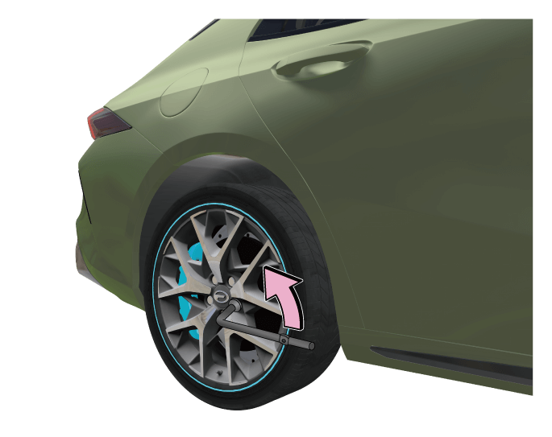

将车轮螺栓拆卸扳手套牢在车轮螺栓上，逆时针拧松车轮螺栓。
8.5 更换漏气轮胎*
准备工作
– 施加驻车制动。
– 将换挡杆挂入“P”挡。
– 整车电源切换到“OFF”挡位，开启危险警告灯。
– 在车辆后方合适的位置放置三角警告牌。
– 寻找合适的物体卡住待更换车轮的对角方向车轮，防止车辆移动。
– 取出随车工具和备用轮胎。

举升车辆

–在距离漏气轮胎最近的脊梁正下方放置好千斤顶。
–摇高千斤顶，确保千斤顶的凹槽能接合脊梁。
–检查千斤顶是否平稳，与地面贴合是否紧密。

–组装车轮螺栓拆卸扳手、千斤顶专用扳手与千斤顶。
–顺时针摇高千斤顶，举升车辆，使轮胎离开地面。
安装备用轮胎

– 将备用轮胎装到车上。
–装上所有车轮螺栓，并按图中①~⑤顺序用车轮螺栓拆卸扳手预紧。
–口头示警，确认车辆周围无人后，反向扭转千斤顶扳手，降下车辆。
–使用车轮螺栓拆卸扳手拧紧所有车轮螺栓。
–为避免汽车在以后的行驶过程时出现噪音，请您记住各种工具的放置位置，使用后将它们放回原位并固定好。
— 页面到底了 —